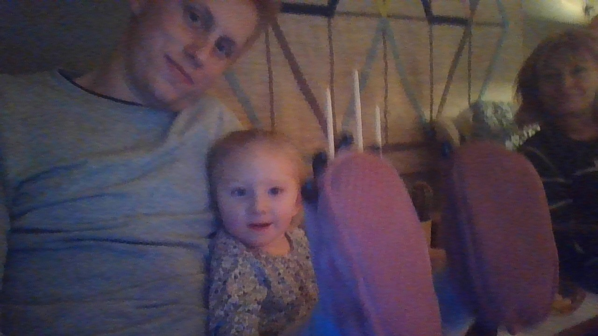

My report page in the course XXX

This is my report-page in the course. This page contains a presentation of myself. Keep this site updated all through the course and hand it in, for grading, in the end of the course.
So, a presentation might be in order. I'll begin.
My name is Felix Karlsson, born in Önnestad and raised in Torsebro and Helgedal, both just outside of Kristianstad. I liked to play computer games and being outside to play soccer, I played all diffrent computer-games and that made me intrested in computers. Nowadays i dont play any computer-games unless its a social thing with friends. Soccer has been something constant in my life and have not had a break from it since i was a kid. I've been working alot of diffrent jobs, first job was selling strawberries, ive been a lifeguard, disher/kitchen-hand, secretary, archive assistant. Ive also been a little of a globetrotter and traveled after my gymnasieum, i moved to Australia for two years, where i was traveling and stopping to work when i ran out of money. I also went to south east asia for half year, traveling thorugh many countries and experiencing many cultures.
When i came back from my travels i applied for Datasystemsutvecklingsprogrammet at Kristianstad University.
If I should mention a hobby, besides web programming, then it would be to remove and carry stones on my sommer cottage. There is a lot of stone there.
On and off I try new hobbies, one year it was online poker, another year it was Geocaching and the Turfing. Currently I am available to start up new hobbies so lets se what might turn up.
Lets keep in touch in the chatt and through GitHub!